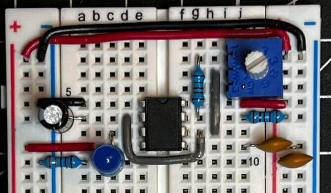
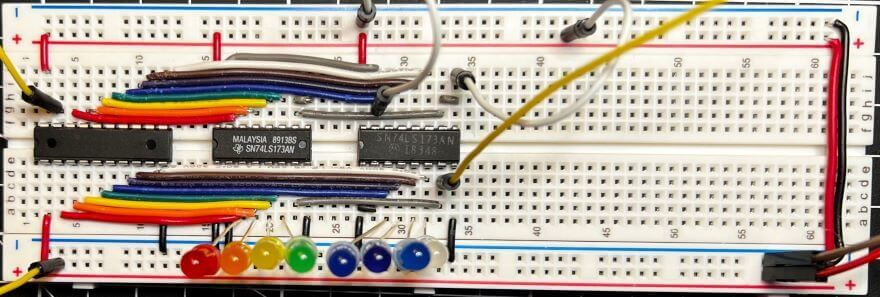

8-bit Breadboard Computer - Build Log¶
 Teddy Warner| 2021-2022 | X-X minutes
Teddy Warner| 2021-2022 | X-X minutes
I’ve used microcontrollers in most of my past projects. IC data sheets are super helpful in board design with their pinouts, but I’ve noticed much of the contents have been pretty foreign to me. Every once in a while, the youtube algorithm recommended one of Ben Eater’s computer concept videos to me, which provide a great explanation of the simplistic logic and proofs in computers. I ended up watching his entire 8-bit Breadboard Computer series (embedded below) over the fall of 2021, to try to get a bit of a better idea of the workings of a microcontroller. The computer is an “as simple as possible”1 take on an 8-bit computer, using only simple logic to create an 8-bit computer on breadboards. The computer is built-in sectioned modules and then interfaced together, making each section a bit easier to swallow.
Documentation Style
This page is a bit different than my other project pages, as it is a build log for my take on this 8-bit Breadboard Computer. Instead of outlining project development (as Mr. Eaters’ videos do an amazing job with that), this page will be a collection of media behind each of my computer modules, as well as some final programs ran on the computer.
Bill of Materials¶
| Qty. | Description | Cost | URL | |
|---|---|---|---|---|
| 14 | Breadboard | $112 | link | |
| 10 | 1kΩ resistor | |||
| 9 | 10kΩ resistor | |||
| 1 | 100kΩ resistor | |||
| 24 | 470Ω resistor | |||
| 1 | 1MΩ resistor | $16.99 | link | |
| 1 | 1MΩ potentiometer | $1.39 | link | |
| 6 | 0.01µF capacitor | $1.20 | link | |
| 16 | 0.1µF capacitor | $3.00 | link | |
| 1 | 1µF capacitor | $0.15 | link | |
| 4 | 555 timer IC | $0.63 | link | |
| 2 | 74LS00 (Quad NAND gate) | $0.76 | link | |
| 1 | 74LS02 (Quad NOR gate) | $0.76 | link | |
| 5 | 74LS04 (Hex inverter) | $0.87 | link | |
| 3 | 74LS08 (Quad AND gate) | $0.72 | link | |
| 1 | 74LS32 (Quad OR gate) | $0.89 | link | |
| 1 | 74LS107 (Dual JK flip-flop) Note: The videos use the 74LS76 which is extremely difficult to find. The 74LS107 is functionally equivalent but be careful: it has a different pinout. |
$1.58 | link | |
| 2 | 74LS86 (Quad XOR gate) | $1.11 | link | |
| 1 | 74LS138 (3-to-8 line decoder) | $0.80 | link | |
| 1 | 74LS139 (Dual 2-line to 4-line decoder) | $1.55 | link | |
| 4 | 74LS157 (Quad 2-to-1 line data selector) | $1.58 | link | |
| 2 | 74LS161 (4-bit synchronous binary counter) | $1.95 | link | |
| 8 | 74LS173 (4-bit D-type register) | $1.45 | link | |
| 2 | 74189 (64-bit random access memory) | $9.90 | link | |
| 6 | 74LS245 (Octal bus transceiver) | $1.26 | link | |
| 1 | 74LS273 (Octal D flip-flop) | $1.99 | link | |
| 2 | 74LS283 (4-bit binary full adder) | $1.38 | link | |
| 3 | 28C16 EEPROM | $11.85 | link | |
| 3 | Double-throw toggle switch | $2.97 | link | |
| 3 | Momentary 6mm tact switch | $1.05 | link | |
| 1 | 8-position DIP switch | $0.79 | link | |
| 1 | 4-position DIP switch | $0.79 | link | |
| 44 | Red LED | |||
| 8 | Yellow LED | |||
| 12 | Green LED | |||
| 21 | Blue LED | $12.99 | link | |
| 4 | Common cathode 7-segment display | $4.36 | link | |
| 1 | 22 AWG Solid Tinned-Copper Hook-Up Wire | $29.95 | link |
— Total Cost - $228.66 —
Clock Module¶



Registers¶

Arithmetic Logic Unit (ALU)¶
Random Access Memory Module (RAM)¶
Program Counter¶
Output Register¶
Module Meshing¶
CPU Control Logic¶
Fibonacci Sequence¶
First 12 Numberes in the Fibonacci Sequence
| n | Fibonacci Number |
|---|---|
| 0 | 0 |
| 1 | 1 |
| 2 | 1 |
| 3 | 2 |
| 4 | 3 |
| 5 | 5 |
| 6 | 8 |
| 7 | 13 |
| 8 | 21 |
| 9 | 34 |
| 10 | 55 |
| 11 | 89 |
-
https://eater.net/8bit ↩